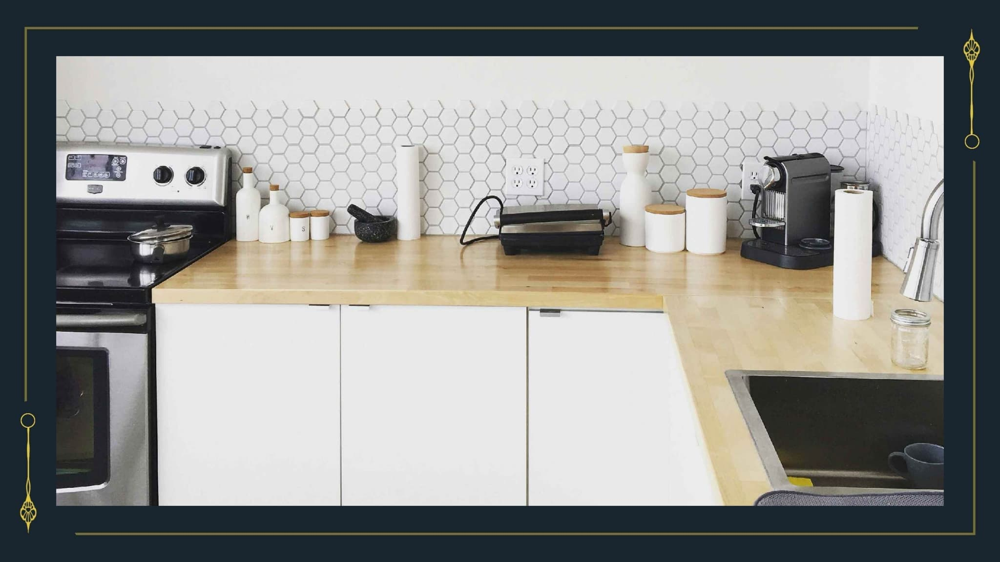

キッチン
scene名：0327_D_02_キッチン
【キッチン・食糧庫】
あなたたちは御膳と話すことにした。
御膳はあなたたちを見据える。そこに笑顔はない。まっすぐな2色の瞳がただあなたたちを見つめていた。
以下の内容を聞いた。
あなたたちは御膳と話すことにした。
御膳はあなたたちを見据える。そこに笑顔はない。まっすぐな2色の瞳がただあなたたちを見つめていた。
以下の内容を聞いた。
調査を終えたら
>> 〘Next Scene〙をクリック
